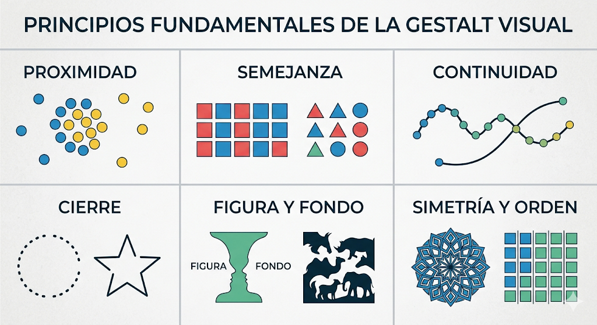

Origen y contexto de la Gestalt
La psicología de la Gestalt (del alemán: forma o configuración) surgió en Alemania a comienzos del siglo XX, impulsada por Max Wertheimer, Wolfgang Köhler y Kurt Koffka. Su premisa central es que el todo es más que la suma de sus partes: el cerebro no percibe elementos aislados, sino que los organiza activa y automáticamente en estructuras coherentes. El principio rector es la Prägnanz (pregnancia): la mente prefiere siempre la interpretación más simple, estable y ordenada posible. La Gestalt nació estudiando la percepción visual, pero sus principios se aplican con igual fuerza a la percepción auditiva.
Proximidad · Semejanza · Continuidad · Cierre · Figura/Fondo · Destino común. Todos describen cómo el sistema visual decide qué elementos "van juntos".
El sistema auditivo enfrenta el mismo problema: separar fuentes sonoras mezcladas en el aire. Los mismos principios, traducidos al dominio temporal y frecuencial, gobiernan la organización de la escena auditiva.
Principios visuales de la Gestalt
La Gestalt visual identificó seis principios clásicos de organización perceptual: Proximidad: los elementos cercanos entre sí se perciben como un grupo — los círculos azules agrupados a la izquierda forman una "nube" distinta de los amarillos dispersos a la derecha. Semejanza: los elementos de igual forma o color se agrupan — los cuadrados rojos y azules se perciben en columnas, no en filas; las figuras geométricas a la derecha se ven como filas de triángulos y círculos por color. Continuidad: el sistema visual sigue la trayectoria más suave — dos curvas que se cruzan se perciben como líneas continuas, no como ángulos quebrados. Cierre: el cerebro completa contornos incompletos — el círculo discontinuo y la estrella se perciben como figuras cerradas aunque tengan huecos. Figura y fondo: la percepción organiza la escena en una figura sobre un fondo — la copa de Rubin puede verse como copa blanca o como dos rostros enfrentados, pero no ambos a la vez. Simetría y orden: los patrones simétricos y regulares tienden a agruparse como unidades. Varios de estos principios —especialmente proximidad, similitud y continuidad— tienen análogos funcionales en la percepción auditiva, aunque el dominio es distinto: en audición operamos sobre tiempo y frecuencia, no sobre espacio visual, y los mecanismos neurales involucrados son diferentes.

Bregman y el flujo auditivo
En 1990, Albert Bregman publicó Auditory Scene Analysis, la obra que trasladó sistemáticamente los principios Gestalt al dominio auditivo. Bregman propuso que el sistema auditivo resuelve el problema de la escena auditiva (separar fuentes mezcladas) mediante dos tipos de proceso:
Automáticos, innatos, no requieren atención. Se basan en regularidades acústicas: armonicidad, continuidad de frecuencia, coherencia de amplitud, y los mismos principios Gestalt —proximidad, similitud, buena continuación, destino común— aplicados al espacio tiempo × frecuencia.
Voluntarios, aprendidos, guiados por el conocimiento previo. Permiten "sintonizar" una voz conocida en una multitud, seguir una melodía aprendida entre el ruido, o reconocer el timbre de un instrumento familiar.
La unidad básica de la percepción auditiva es el flujo auditivo (auditory stream): una secuencia de sonidos que el cerebro agrupa y atribuye a una misma fuente. El paralelo con la Gestalt visual es directo: donde la visión agrupa puntos en columnas o filas, el oído agrupa sonidos en melodías o voces. Los mismos principios — proximidad, similitud, continuidad, destino común — determinan qué sonidos forman un flujo y cuáles pertenecen a fuentes distintas.
Demostraciones auditivas
Selecciona un principio para ver su representación tiempo × frecuencia y escuchar el ejemplo auditivo correspondiente.